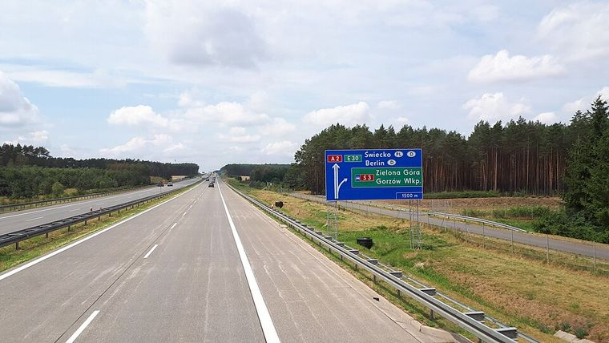

Polska — wszystkie działy
244 opracowania
ŁódzkieV

Łódzkie27.11.2026, 09:00
W piątek, 27 listopada, na 339. kilometrze autostrady A1, na wysokości miejscowości Sierosław w powiecie piotrkowskim, doszło do poważnego wypadku z udziałem trzech pojazdów. Jezdnia w kierunku Gdańska została całkowicie zablokowana.
Kluczowe parametry
Liczba źródeł2 redakcje
Kategoria/Polska/Regiony/Lodzkie
Główne źródłoTVP3 Łódź
Małopolskie27.11.2026, 09:00
Betonowe zapory stanęły przy wjeździe na Krupówki i Plac Niepodległości w Zakopanem. Miasto tłumaczy, że to działanie mające zwiększyć bezpieczeństwo mieszkańców i turystów, szczególnie w okresie…
2 redakcje/Polska/Regiony/Malopolskie
ZachodniopomorskieV

Zachodniopomorskie27.11.2026, 09:00
W związku ze Szczecińskim Jarmarkiem Bożonarodzeniowym, który odbędzie się od 27 listopada do 22 grudnia, w centrum miasta zostanie wprowadzona czasowa organizacja ruchu.
2 redakcje/Polska/Regiony/Zachodniopomorskie
Gospodarka27.11.2026, 09:00
Jaką część rynku FMCG w Polsce kontroluje łącznie trzech największych detalistów (Biedronka, Lidl i Dino), a jaką pierwsza dziesiątka sieci?
2 redakcje/Polska/Gospodarka
GospodarkaV

Gospodarka27.11.2026, 09:00
InPost wchodzi do Irlandii, w ciągu najbliższych 24 miesięcy planuje postawić tam ponad 1 tys. paczkomatów – poinformował prezes grupy Rafał Brzoska."Otwieramy kolejny rynek!
2 redakcje/Polska/Gospodarka
GospodarkaV

Gospodarka27.11.2026, 09:00
Jeden z naszych czytelników uzyskał potwierdzenie od Autopay, że atakujący miał dostęp nie tylko do samego numeru karty płatniczej, ale również do pozostałych danych karty, w tym kodu CVV2: Różne banki zaczęły…
2 redakcje/Polska/Gospodarka
LubelskieV

Lubelskie27.11.2026, 09:00
Nie żyje 28-letni żołnierz z chełmskiej jednostki wojskowej. Jego ciało znaleziono w rejonie Kumowej Doliny w Chełmie (woj. lubelskie).
3 redakcje/Polska/Regiony/Lubelskie
WielkopolskieV

Wielkopolskie27.11.2026, 07:11
IBRiS przeprowadził badanie wśród mieszkańców miasta. To drugi w ostatnim czasie sondaż w sprawie propozycji zwołania referendum dotyczącego odwołania prezydenta Poznania Jacka Jaśkowiaka.
2 redakcje/Polska/Regiony/Wielkopolskie
MałopolskieV

Małopolskie27.11.2026, 07:11
Tatrzańskie stawy, w tym słynne Morskie Oko zamarzły, jednak lód jest bardzo cienki i niebezpieczny – ostrzega Tatrzański Park Narodowy (TPN).
2 redakcje/Polska/Regiony/Malopolskie
PomorskieV

Pomorskie27.11.2026, 07:11
7 grudnia poznamy nazwę stoczni, która zostanie wybrana spośród trzech, które stanęły do przetargu na budowę żaglowca dla Uniwersytetu Morskiego w Gdyni, czyli jednostki, która zastąpi "Dar Młodzieży".
1 redakcja/Polska/Regiony/Pomorskie
ŚląskieV

Śląskie27.11.2026, 07:11
Grupa Żywiec planuje zwolnienia grupowe obejmujące 61 pracowników. Redukcje mają objąć dział sprzedaży i zostaną przeprowadzone jeszcze w listopadzie oraz grudniu 2026 r. Spółka wydała oświadczenie, w którym…
2 redakcje/Polska/Regiony/Slaskie
PolitykaV

Polityka27.11.2026, 07:11
Jarosław Wyrembak, uznawany za tzw. dublera, zniknął z listy sędziów TK. Według obecnych władz TK nie jest on sędzią.
11 redakcji/Polska/Polityka
PolskaV

Polska27.11.2026, 07:11
Pięć osób, w tym jedną nieletnią, zatrzymała stołeczna policja w sprawie pomalowania na początku listopada trzech warszawskich pomników. Namalowano na nich czerwone napisy "Slava UPA".
7 redakcji/Polska
Wyświetlono 13 z 244 opracowań · przewiń w dół, aby wczytać kolejne